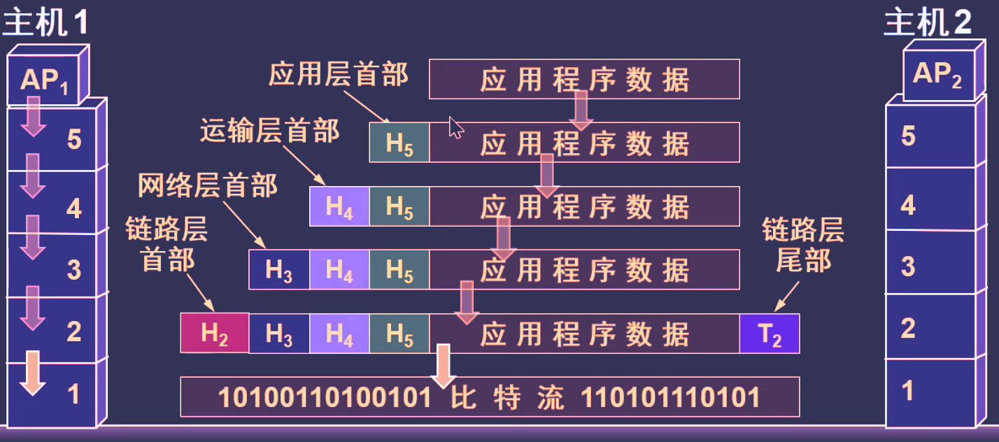

-
概述
-
三网融合
- 计算机网络
- 电信网络
- 游戏电视网络
-
Network 计算机网络
由若干个
结点（node）和连接这些点的链路（link）组成 -
Internet 互联网
特指起源于美国研制的ARPAnet，最大的、覆盖全球的计算机网络
互联网的基本特性:
- 连通性：用户间可以交换信息
- 共享：资源的共享
互联网+：互联网 + 各个传统行业
-
internet(internetwork) 互连网
通过
路由器将各个网络（Network）互连起来的，构成覆盖范围更大的计算机网络 -
主机
与
互连网（internet）相连的计算机,可以是计算机或者智能手机等 -
互联网基础架构发展的三个阶段
- 第一阶段：从单个网络ARPANET的向互联网发展过程
- 第二阶段：形成了三级结构：主干网——地区网——企业网（校园网）
- 第三阶段：形成了多层次ISP结构的互联网，出现了
互联网服务提供者ISP(Internet Service Provider)
-
成为互联网正式标准的三个阶段：
所有互联网标准都以RFC的形式在互联网上发表
- 互联网草案：有效期只有6个月
- 建议标准：成为RFC文档
- 互联网标准：每个标准将被分配一个编号STDxxxx，一个标准可以关联多个RFC文档
-
互联网的组成
- 边缘部分：连接在互联网上的
主机（端系统），是用户直接使用的 - 核心部分：
网络和连接这些网络的路由器，为边缘部分提供服务
边缘部分与核心部分之间通过
接入网AN进行连接 - 边缘部分：连接在互联网上的
-
端系统（主机）间的通信
计算机之间的通信的含义：
“主机A和主机B进行通信” 实际上是指：
"主机A的某进程和主机B的某进程进行通信"端系统之间的通信方式：
- 客户-服务器方式（C/S）,即Client/Server
- 客户需要知道服务器的地址
- 服务器不需要知道客户的地址（之所以能准确发送回客户，是因为路由器的作用）
- 对等方式（P2P），即Peer-to-Peer
- 运行了P2P软件的两个主机，既可以是客户端，也可以是服务端
- 客户-服务器方式（C/S）,即Client/Server
-
通信网络中的交换方式
-
电路通信：通过
电线进行连接，当主机数量增多时，需要电路交换机来完成两端之间要建立通信，需要抢占链路，直到结束通信前将一直保持连接
电路通信的三个阶段：建立连接——通信——释放连接
电路交换的特点：需要先建立连接，但是数据传输快,适合连续大量的数据传输
电路交换的缺点：通信线路的利用率低，电路交换的用户始终占用端到端的通信资源（比如打开一个网页进行浏览时，将一直保持连接）
-
分组交换：以
分组为数据传输单元单位，进行存储转发分组交换的过程：
- 发送端划分报文成数据段，并为数据段添加
首部（包含了数据段顺序、目的地址和源地址等控制信息,相当于打tag） - 发送端把数据段
一段一段地发给结点交换机（路由器） - 结点交换机根据首部中的目的地址
（查找转发表）分组转发给接收端 - 接受端一段一段地接受数据段，接收完毕后根据首，
剥去首部还原报文
分组交换的优点：
- 高效：传送过程中
动态传输带宽,对链路是逐段占用的 - 灵活：可以为每一个分组选择最合适的转发路由
- 迅速：可以不先建立连接就能发送分组
- 可靠：由可靠的网络协议
分组交换的缺点：
- 转发时需要排队，将造成一定的时间延迟
- 首部带来的开销
相较于电路通信，不需要先抢占链路，只需将分组发送给路由器，分组间的传输均由路由器完成
- 发送端划分报文成数据段，并为数据段添加
-
-
路由器
路由器之间的输入和输出端口之间
没有直接的连线路由器处理分组的过程:
- 把接收到的分组
放入缓存 查找转发表,得到于目的地址对应的端口- 根据端口进行转发
- 把接收到的分组
-
按网络的作用范围进行分类
- 广域网WAN（Wide Area Network）：作用范围通常为几十到几千公里
- 城域网MAN（Metropolitan Area Network）：作用范围在5~50公里
- 局域网LAN（Local Area NetWork）：作用范围在1公里左右
- 个人局域网PAN（Personal Area Network）：作用范围在10米左右
-
计算机网络性能指标
- 速率:单位时间内数据的传送量，单位：bit/s
- 带宽：单位时间内某信道所能通过的
最高速据率,单位：bit/s - 吞吐量：单位时间内通过某个网络（信道、接口）的数据量，单位：bit
- 时延：数据从一端送到另一端所需的时间
- 时延带宽积：传播时延 × 带宽
- 往返时间RTT：从发送端发送数据到发送端收到接收方的确认，总共经历的时间
- 利用率：信道利用率和网络利用率
-
时延
时延指数据从网络的一端发送到另一端所需的时间
-
发送时延(传输时延)：
发送时延 = \frac{数据帧长度(bit)}{发送速率(bit/s)}
指主机或路由器发送数据所需的时间 -
传播时延:
指电磁波在信道中传播一定距离所需的时间
传播时延 = \frac{信道长度(m)}{电磁波在信道上的传播速率(m/s)} -
处理时延:
主机或路由器收到分组后进行处理所花费的时间
-
排队时延:
分组进入路由器后进入队列进行排队等待处理的时间
-
-
网络协议和网络层次
-
网络协议：为了进行网络中数据交换而建立的规则（数据应该用什么语法、应该发送什么控制信息、应该怎么对信息进行响应、响应事件的顺序应该是什么样等）
网络协议的组成要素：
- 语法：数据与控制信息的格式
- 语义：需要发出何种控制信息，完成何种动作和响应
- 同步：事件实现顺序的详细说明
五层协议体系结构的网络层次划分：
- 应用层：提供各种网络应用服务（FTP、SMTP、HTTP）
- 运输层：负责两个主机之间建立连接（TCP、UDP）
- 网络层：从源到目的地的选路（IP、选路协议（路由器））
- 链路层：定义了internet与各物理网络之间的网络接口，负责错误重发，流量控制，拥堵控制（PPP、以太网（交换机））
- 物理层：采集到的数据转换成二进制数据。以及网络采用什么介质。（中继器）
ps: 路由器只有物理层、链路层、网络层
-
五层协议体系结构的数据传送过程：

主机1：
- 应用数据先传送到应用层，并
加上应用层首部，成为应用层PDU（协议数据单元，包括控制信息和用户数据两个部分） - 应用层PDU再传送到运输层，
加上运输层首部，成为运输层报文 - 运输层报文再传送到网络层，
加上网络层首部，成为IP数据报（或分组） - IP数据报再传送到数据链路层，
加上数据链路层首部和尾部，成为数据链路层帧 - 数据链路层再传送到物理层
- 物理层把比特流传送到物理媒体
主机2：
- 电信号（或光信号）在物理媒体中传送到接收端的物理层
- 物理层接收到比特率，交给上层数据链路层
- 数据链路层
剥去帧首部和尾部，取出数据部分传给网络层 - 网络层
剥去网络层首部，取出数据部分交给传输层 - 运输层
剥去运输层首部，取出数据部分上交给应用层 - 应用层
剥去应用层首部，取出应用程序数据上交给应用进程
- 应用数据先传送到应用层，并
-
-
实体、协议、服务和服务访问点
-
实体(entity)：可以发送或接收信息的硬件或软件进程
-
协议：控制两个对等实体进行通信的规则的集合
-
在协议的控制下，两个对等实体间的通信使得本层能向上一层提供服务
-
要实现本层协议，需要向使用下层所提供的服务
协议和服务的区别：
- 协议是保证能向上层提供服务
- 本层的服务可见而协议不可见
- 协议是
水平的，协议是控制两个对等实体间的通信规则 - 服务是
垂直的，即服务是由下层向上层通过接口提供的
-
服务访问点SAP（Service Access Point）
SAP本质上是一个逻辑接口， 是同一系统相邻两层实体进行交互的地方,上层要使用下层的服务，就需要使用服务访问点
-
-
-
物理层
-
物理层的基本概念
物理层注意关注于传送媒体上的传输数据比特流，而不是传输媒体
用于物理层的协议也常称为
物理层规程物理层的作用：尽可能地屏蔽掉不同传输媒体和通信手段的差异
物理层的主要任务：确定与传输媒体的接口的一些特性:
- 机械特性：确定接口尺寸形状、引线的数目和排列等
- 电气特性：确定电压范围
- 功能特性：确定电平所表示的意义
- 过程特性：确定工作时各种事件出现的顺序
-
数据通信
-
数据通信系统的模型
包括源系统、传输系统、目的系统 -
一些常用的术语
- 数据（data）：消息的实体
- 信号（signal）：数据的在物理上的电磁表现
- 模拟信号（analogous signal）：消息的参数的取值是连续的
- 数字信号（digital signal）：代表消息的参数的取值是离散的
- 码元（code）：用n进制来表示某种波形信号（比如某波形是在-10v和+10v变动，那么就可以用一个二进制码元表示-10v和+10v）
-
关于信道的一些概念
- 信道：以传输媒质为基础的信号通路
- 单工通信（单向通信）：只有一个方向的通信
- 半双工通信（双向交替通信）：双方都可以发送或接收信息，但是不能同时发送或接收消息
- 全双工通信（双向同时通信）：通信的双方可以同时发送和接收信息
- 基带信号：未被调制前的信号，是来自信源的信号，被在基带系统中编码成
数字信号 - 基带调制（编码）：对基带信号的波形进行变换，变换后仍是基带信号
- 带通调制：在
调制解调器(用于数字信号和模拟信号之间的转换)中利用载波调制到较高的频段，并转换为模拟信号 - 带通信号：基带信号经过载波调制后的形成的
模拟信号
-
常见的编码方式：
- 不归零制：正电平代表1，负电平代表0
- 归零制：正脉冲代表1，负脉冲代表0
- 曼切斯特编码：向上跳变代表0，向下跳变代表1，也可以反过来
- 差分曼切斯特编码：保持和上一次跳变一致代表0，不一致代表1

从信号波形可看出，曼切斯特编码和差分曼切斯特编码产生的信号频率更高，而且具有
自同步能力，不归零制则没有 -
基本的带通调制方法
- 调幅（AM）：调节载波振幅
- 调频（FM）：调节载波频率
- 调相（PM）：调节载波初始相位
- 正交振幅调制（QAM）：载波振幅、相位的混合调制
-
影响码元在信道上传输速率的因素
- 信道能够通过的频率范围
- 信噪比
-
奈氏准则：提出在理想调节下，能够避免码间串扰（传输速率过快，界限不清楚）的码元传输速率上限值
-
信噪比：信号的平均功率和噪声的平均功率之比
信噪比(dB) = 10 log_{10}\frac{S}{N} (dB) -
香农公式：
- W：信道的带宽（以 Hz 为单位）
- S：信道内所传信号的平均功率
- N：信道内部的高斯噪声功率
香农公式说明信噪比越大，则信息的极限传输速率就越高
-
-
物理层下面的传输媒体
传输媒体一般传输的是数字信号
- 导引型传输媒体
- 双绞线：最常用，支持模拟传输和数字传输
- 同轴电缆：抗干扰强、传输效率高
- 光纤（光缆）：传输带宽大、耗损小
- 非导引型传输媒体
- 短波：靠电离层反射，可以向所有方向传播，通信质量差、传播效率低
- 微波：只能直线传播，数据率高
- 红外线、激光：只能直线传播，需要进行信号转换
- 导引型传输媒体
-
信道复用技术
所谓复用，是指允许用户共享一个信道进行通信
- 频分复用：带宽分为多份，每个子信道传输一路信号，用户在同样的时间占用不同的带宽资源
- 时分复用：将时间划分为一段段等长的时分复用帧，每一个用户所占用的时隙是周期性地出现
- 统计时分复用：帧不是固定分配时隙，而是按需动态地分配时隙
- 波分复用：利用多个激光器在单条光纤上同时发送多束不同波长的激光，使用一根光纤来同时传输多个光载波信号。
- 码分复用：每个用户可以在同样的时间使用同样的频带进行通信
-
-
数据链路层
链路是一条无源点到点的物理线段，中间没有其他可交换的节点，数据链路层传输的基本单位是帧(数据+首部+尾部)
首部和尾部的重要作用就是帧定界（规定IP数据报的大小，即小于等于MTU）
物理链路：通常上指的链路
逻辑链路：物理链路 + 通信协议
数据链路层的主要功能：
- 帧同步
- 差错控制
- 流量控制
- 链路管理
- MAC寻址
-
数据链路层存在的三种问题
- 封装成帧（加入首尾部）
- 透明传输（服务透明）
- 差错控制（判断帧是否正确，正确则剥去首尾部，错误则丢弃）
-
字节（字符）填充
SOH|帧中间的数据部分|EOT
-----|-----|-----
| |SOH、EOT被叫做帧定界符分别表示从首部开始到尾部结束，但是SOH和EOT并不能准确得帧定界（比如数据部分插入了SOH或EOT，这将导致数据的丢失），因此需要进行
字符填充（字节填充）：在数据段中出现的SOH或EOT前面插入一个转义字符ESC。数据段 ESC EOT 数据段 EOT -
比特填充（零比特填充）
为了避免在传送的数据信息中心出现相同比特组合被误认为是帧的首、尾标志，必须对其进行
比特填充，具体做法是：数据比特流中出现5个连续“1”的时候，它就自动在输出比特流中插入一个“0”。
比如：
01111110进行比特填充后：011111010-
差错检测
传输过程中可能会产生
比特差错，比如1变成0或0变成了1，因此必须采取各种的检错措施：循环冗余检验(CRC)、奇偶校验、因特网校验等。通过检测的数据报将被保留，否则将丢弃CRC能检测出多位突发性差错，但不能进行纠正
因为CRC只能做到“无差错传输”而不能做到
可靠传输(即发送什么就收到什么)，当出现帧丢失、帧重复、帧乱序的情况，链路层只能保证0不会传成1，1不会传成0，因此需要在传输层进行可靠传输：自动重传请求(ARQ协议)、流水线协议(连续ARQ协议) -
冗余码计算
通过CRC校验（不是唯一获得冗余码方法），可得到一个字段：
帧检验序列FCS（冗余码），通过FCS字段判断接收帧的网卡或接口是否发生了错误。已知多项式为 P(x)=x3+x2+1，信息码为101001，求冗余码FCS
其中用到了模2运算法则
多项式最高项为3，因此在信息码后补3个0得到被除数：101001000 根据多项式可获得除数（x次项系数是0则写0，否则写1）： 3次项的系数是1，因此：1 2次项的系数是1，因此：11 1次项的系数是0，因此：110 0次项的系数是1，因此：1101 所以除数为1101 对 101001000 和 1101 进行 模2除法 得： 商为110101，余数为001 冗余码FCS即为余数：001 -
PPP协议(点对点协议)
PPP支持在多种物理类型的点对点串行线路上传输上层协议报文，用户和ISP进行通信时所使用的数据链路层协议就是PPP协议
PPP协议的特点：
- 简单（只进行点对点数据传输，不进行帧纠错、流量控制）
- 封装成帧
- 透明（异步时字符填充法，同步时比特填充）
- 多层网络层协议（一条链路上支持多种网络协议同时允许）
- 多种链路类型（串行、并行链路等）
- 差错检测
- 检测连接状态
PPP协议的组成部分：
- 一个将 IP 数据报封装到串行链路的方法
- 链路控制协议LCP
- 网络控制协议NCP
可见PPP协议不只是存粹的数据链路层协议，还包含了物理层和网络层的内容
PPP协议是面向字节的，所有PPP帧的长度都是整数字节
-
局域网的数据链路层
- 以太网
以太网是指符合以太网标准的局域网
以太网一般有两个标准：DIX EthernetV2（严格意义上的局域网标准）、IEEE 802.3
-
数据链路层的两个子层
IEEE802委员会将数据链路层拆分成两个子层
-
LLC层：逻辑链路控制层
-
MAC层：媒体接入控制层
MAC与接入到媒体有关的内容相关，而LLC对于它下面的局域网是透明的
由于TCP/IP协议通常采用DIX EthernetV2标准，因此一般不会采用IEEE802协会制定的LLC层，一般厂商生产的
适配器上只会有MAC协议 -
-
网卡（NIC）
网卡（Network Interface Card，简称NIC），也被叫做
网络适配器，是连接到局域网的必要硬件，网卡包含了物理层和数据链路层，并且实现了以太网协议。网卡的功能：
- 将本机数据封装成帧，并发送到局域网上
- 接收网络上其他设备发送的帧，解析后发送到本机上
-
以太网的发送数据信号的方式：广播
以太网通过广播的方式实现一对一通信：
-
总线上的任意一个计算机都能检测A计算机发送的数据帧
-
但是只有B的地址与A发送的数据帧的首部一致
-
因此只有B能接收到A发送的消息，而其他计算机不能
-
-
CSMA/CD协议
CSMA/CD 含义：载波监听多点接入 / 碰撞检测
-
多点接入表示许多计算机以多点接入的方式连接在一根总线上 -
载波监听表示在发送数据之前先检测总线上有没有其他计算机在发送数据，如果有则暂时不发送，等一段随机事件后再发送 -
碰撞检测就是计算机边发送数据边检测信道上的信号电压大小。。当几个站同时在总线上发送数据时，总线上的信号电压摆动值将会增大(互相叠加)。
当一个站检测到的信号电压摆动值超过一定的门限值时，就认为总线上至少有两个站同时在发送数据，表明产生了
碰撞，碰撞的结果是两个帧都变得无用。之所以要进行碰撞检测，是因为载波监听无法判断总线是否是"真正的空闲"：有可能总线上没有信号在传输，也有可能是主机已经发送数据完毕但是信号仍在总线上传输
PS：采用CSMA/CD协议的以太网只能进行
双向交替通信（半双工通信），即可以发送或接收消息，但是不能同时发送或接收消息以太网规定了
最短有效帧长为 64 字节，也就是说如果小于64字节的帧都是无效帧，比如发生了碰撞后立即停止发送，那么发送出去的数据帧必然小于64个字节 -
-
使用集线器的星形拓扑
采用双绞线的以太网采用星形拓扑，并且在中心添加了一个
集线器(hub)集线器工作在
物理层，使用集线器的以太网在逻辑上仍然是一条总线，通过集线器可以模拟实际电缆线的工作，因此整个系统仍然像一个传统的以太网那样运行（工作站还是用的CSMA/CD协议）-
星型以太网 10Base-T Ethernet
IEEE 制定出星形以太网 10Base-T的标准 802.3i，10Base-T是Ethernet局域网的一种配置。
其中：
- 10：指传输速率为10Mb/s
- Base：指的是基带传输
- T：指采用双绞线
-
以太网的信道利用率
其中：
为信道利用率
为帧发送时间，其中为帧长，为发送速率(数据率)单位可以是 bps 或 bit/s
为比特在媒体上传输到另一端所需的时间，因此表示发送一帧占用线路的时间
-
MAC层
在局域中硬件地址一般被称为物理地址或MAC地址（严格来说不是地址而是一个48位的标识符）
MAC地址实际上就是适配器地址或适配器标识符 EUI-48
适配器每从网络上受到一个MAC帧，就首先用硬件检测MAC帧中的MAC地址，发往本站的帧则收下，否则丢弃该帧
IEEE802标准规定MAC地址字段可采用6字节（48位）或2字节（16位）
当采用48位的MAC地址时，其MAC地址结构为：
24bit|24bit
-----|-----
组织唯一标识符|扩展唯一标识符IEEE 把地址字段第一字节的最低第 2 位规定为 G/L位，表示 Global/Local。
- 当 G/L位 = 0 时，是全球管理（保证在全球没有相同的地址），厂商向IEEE购买的 OUI 都属于全球管理。
- 当 G/L位 = 1 时， 是本地管理，这时用户可任意分配网络上的地址。
-
MAC帧格式
以太网 MAC 帧格式一般有两种标准：
- DIX Ethernet V2 标准
- IEEE 的 802.3 标准
最常用的 MAC 帧是以太网 V2 的格式:
6bit 2bit 45-1500bit 4bit 源地址 类型 数据 FCS 其中类型字段用来标志上一层使用的是什么协议，以便把收到的 MAC 帧的数据上交给上一层的这个协议。数据字段的正式名称是
MAC客户数据字段，最小长度 64 字节 − 18 字节的首部和尾部 = 数据字段的最小长度（46字节） -
扩展以太网的方法：
-
在物理层上：
- 使用光纤拓展
- 使用集线器（hub）拓展
- 在数据链路层扩展：
- 使用网桥
- 使用交换机
-
以太网交换机：
- 交换机的
接口内置了存储器，可以对帧进行缓存 - 在内部维护了一张
交换表（地址表），并通过自学习算法对其维护 - 采用
硬件转发，转发效率比网桥的软件转发效率高
- 交换机的
通过交换机用户可以独享带宽，并且有多种速率的接口
-
-
以太网交换机的交换方式
- 存储转发：
先缓存数据帧再进行处理 - 直通方式：
接收数据帧的同时，立即按数据帧的目的MAC地址决定该帧的转发接口
- 存储转发：
-
交换机的自学习算法
交换机中的表其实类似一个键值对的形式：键是MAC地址，值是接口和该帧的有效时间
交换机自学习流程是：
- 交换机收到帧检查交换表（检查该
帧的目的地址是否与表中的MAC地址中的源地址有匹配） - 如果表中存在记录，则向该MAC地址所对应的接口
单播该帧 - 如果表中不存在记录，则向所有接口
广播该帧
举个连接同一个交换机的主机A和B交换数据的栗子：
主机A向主机B发送数据帧：
- 一开始表是空的
- A向B发送一帧从
接口1进入到交换机 - 交换机收到帧后，查找交换表，但是找不到应该从哪个口转发这个帧
- 交换机将A的
MAC地址和接口1写入表中 - 因为没有找到转发接口，所以交换机向除了接口1以外的接口广播该帧
- 接口234分别把帧发送给主机BCD
- 主机BCD检查该帧的目的地址，其中CD发现目的地址不对，因此丢弃该帧，而B将收下该帧
收到帧的B又向A发送一帧：
- B向A发送一帧从
接口3进入到交换机 - 交换机检查表发现有A的记录，因此直接通过接口1发给A，不需要再广播收到的帧

- 交换机的生成树协议STP
自学习的过程可能会导致以太网帧在网络的某个环路中无限地兜圈子，白白浪费了网络资源

为了解决这一问题，IEEE 802.1D 标准制定了一个生成树协议 STP，不改变网络的拓扑结构，但在逻辑上则切断某些链路，使得从一台主机到所有其他主机的路径是无环路的树状结构，从而消除了兜圈子现象
- 虚拟局域网VLAN
虚拟局域网（VLAN）就是不改变原网络的拓扑结构，而是根据需要灵活地加入不同的逻辑子网（由一些局域网网段组成）的一种技术
注意：虚拟局域网本质上是一种提供给用户的服务，而不是真正意义上的局域网
- VLAN的帧格式
VLAN协议允许在以太网帧中插入一个4字节的标识符，称为
VLAN标记(tag)，用来指明发送这个帧的计算机是属于哪一个 VLAN。插入tag的VLAN帧被称为
802.1Q帧（或带标记的以太网帧）帧格式为：
bit 4bit 2bit 45~1500bit 4bit 源地址 tag 类型 数据 FCS - 交换机收到帧检查交换表（检查该
- 以太网
-
网络层
-
两种观点
- 网络层应该是面向连接的，并且提供可靠传输
所谓面向连接就是提前建立虚电路（逻辑电路，与电路交换中的电话通信不同，不是真正的建立物理连接，只是预先规划好路线并不是实际的占用） - （主流）网络层应该是无连接，并且不提供可靠传输
- 网络层应该是面向连接的，并且提供可靠传输
-
两种服务
分组交换的两种实现方式：
虚电路服务 数据报服务 接的建立 需要 址与源地址的携带 不需要 选择 所有分组选择同一路由 故障时 虚电路罢工 顺序 按发送顺序到达目的站点 的差错控制和流量控制 可以由网络或主机负责 层的实现 TCP -
不同网络互连的中间设备
- 物理层中继系统：转发器
- 数据链路层中继系统：网桥
- 网络层中继系统：路由器
- 网桥+路由器：桥路器
- 网络层以上中继系统：网关
-
IP协议
-
IP地址
IP地址就是在全球范围内分配给每一个连接上互联网的主机的一个唯一的32位标识符
IP地址被分为2个字段，其中一个字段为
网络号net-id，用来标志连接到网络的主机；另外一个字段为主机号host-id，用来标志该主机或路由器。主机号所在的网络范围内是唯一的，因此IP地址在整个互联网范围内是唯一的实际上IP地址是标志一个主机（或路由器）和一条链路的接口，IP地址是一种逻辑上的地址
路由器只根据目的站的IP地址的
网络号进行路由选择 -
常用的三类ip地址
络号 主机号 能表示范围 一般表示含义 1个 后3个 1.0.0.1~126.255.255.254 10.0.0.010.255.255.255是私有地址，127.0.0.0127.255. 255.255是保留地址 2个 后2个 128.1.0.1~191.255.255.254 172.16.0.0172.31.255.255是私有地址，169.254.0.0169.254.255.255是保留地址 3个 后1个 192.0.1.1~223.255.255.254 192.168.0.0~192.168.255.255是私有地址 -
IP数据报和TCP报文和MAC帧的关系

-
地址解析协议ARP
该协议的主要作用：通过IP地址能解析出在数据链路层使用的硬件地址;当主机A向主机B发送IP数据报时，先在ARP高速缓冲中查看是否有B的IP地址；如果有，则将对应的硬件地址写入MAC帧，再通过局域网发往此硬件地址；否则ARP进程在本局域网上广播一个
ARP请求分组，分组的主机将得到的IP地址到硬件地址的映射写入ARP告诉缓存中 -
IP数据报格式：

- 版本：IP协议的版本号，目前版本号为4（IPv4），下一个版本号是6（IPv6）
- 首部长度：字面意思
- 区分服务：用来获得其他服务，一般不会用到
- 总长度：数据+首部的长度
- 标识：会自动累加，用来标识被分片后的数据报后是来自于哪一个数据报
- 标志：用来表示是否还可分配，只有三位：其中中间一位DF=0时表示可分片，DF=1时表示不可分片；最低位MF=1时表示"后面还有分片"，MF=0时表示"是最后一个分片"
- 片偏移：表示被分片的分组在原分组中的相对位置
- 生存时间：根据TTL（Time to live 数据报在网络中可通过的路由器数的最大值）来决定数据报何时销毁：每经过一个路由器时TTL -= 1，当TTL为0时，该数据被丢弃
- 协议：指出该数据报使用了何种协议
- 首部检验和：对数据报首部进行差错检验（非CRC）
- 源地址、目的地址：字面意思
- 可变部分：用来支持排错、安全检测等措施，目的是增加数据报的成功率
-